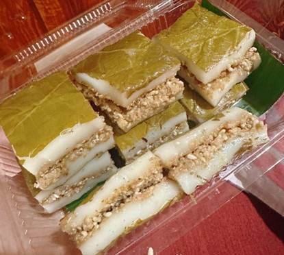
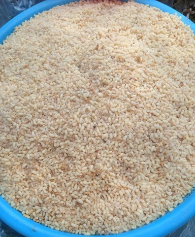
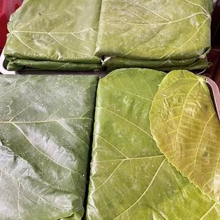
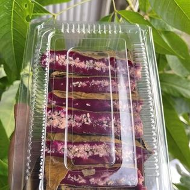
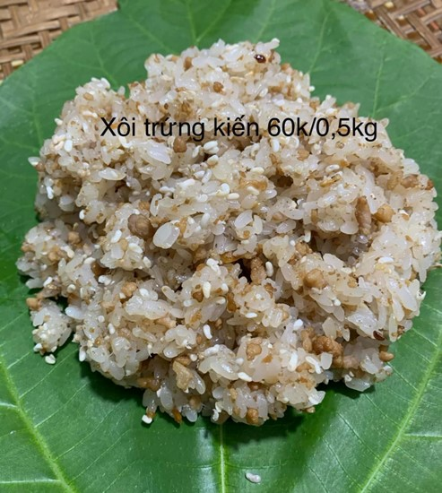
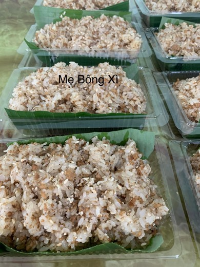

Bánh trứng kiến, xôi trứng kiến
Loại bánh đặc biệt này được coi là đặc sản của người Tày ở vùng Cao Bằng, Bắc Kạn. Nguyên liệu chính của bánh chính là loại trứng kiến. Vì phụ thuộc vào nguyên liệu đặc biệt này nên hàng năm chỉ có thể làm bánh từ đầu tháng 4 cho đến cuối tháng 5 Dương lịch, tương đương từ cuối tháng 2 đến hết tháng 3 Âm lịch. Đây là thời gian sinh trưởng mạnh nhất của loài kiến đen rừng.
Nguyên liệu chính bao gồm trứng kiến, bột gạo, vỏ ngoài là lá vả. Trứng kiến sau khi thu hoạch sẽ được rửa sạch, mang đi xào lăn, rồi đem rắc lên phần lớp bột được cán mỏng trên lá vả và mang đi hấp. Bánh mang hương vị bùi béo, thơm ngon đậm chất núi rừng, sẽ là trải nghiệm thú vị về ẩm thực cho du khách. Để miếng bánh đẹp hơn người ta cắt bánh thành từng ô vuông nhỏ bày ra đĩa.
Với những khách du đến Cao Bằng muốn mua bánh trứng kiến về làm quà thì phải bảo quản trong ngăn đá của tủ lạnh, trước khi ăn thì bỏ ra hấp nóng để ăn. Tuy nhiên, chắc chắn là sẽ không được ngon như ăn tại chính nơi làm ra nó đâu.
Ngoài bánh trứng kiến được làm từ trứng kiến, còn có món xôi trứng kiến là một món ngon không thể bỏ qua khi du lịch tới Cao Bằng.
 